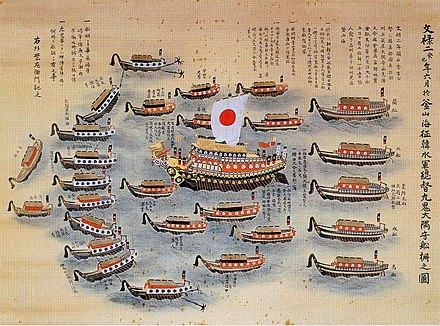
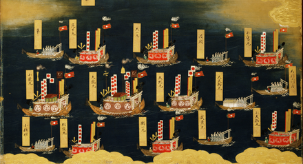

This is the Flag of Japan made using only HTML and CSS
The national flag of Japan is a rectangular white banner with a crimson-red circle at its center. The flag is officially called the Nisshōki (日章旗, 'flag of the sun') but is more commonly known in Japan as the Hinomaru (日の丸, 'ball of the sun'). It embodies the country's sobriquet: the Land of the Rising Sun.
The Nisshōki flag is designated as the national flag in the Act on National Flag and Anthem, which was promulgated and became effective on 13 August 1999. Although no earlier legislation had specified a national flag, the sun-disc flag had already become the de facto national flag of Japan. Two proclamations issued in 1870 by the Daijō-kan, the governmental body of the early Meiji period, each had a provision for a design of the national flag. A sun-disc flag was adopted as the national flag for merchant ships under Proclamation No. 57 of Meiji 3 (issued on 27 January 1870), and as the national flag used by the Navy under Proclamation No. 651 of Meiji 3 (issued on 3 October 1870). Use of the Hinomaru was severely restricted during the early years of the Allied occupation of Japan after World War II; these restrictions were later relaxed.
The sun plays an important role in Japanese mythology and religion, as the Emperor is said to be the direct descendant of the Shinto sun goddess Amaterasu, and the legitimacy of the ruling house rested on this divine appointment. The name of the country as well as the design of the flag reflect this central importance of the sun. The ancient history Shoku Nihongi says that Emperor Monmu used a flag representing the sun in his court in 701, the first recorded use of a sun-motif flag in Japan. The oldest existing flag is preserved in Unpō-ji temple, Kōshū, Yamanashi, which is older than the 16th century, and an ancient legend says that the flag was given to the temple by Emperor Go-Reizei in the 11th century. During the Meiji Restoration, the sun disc and the Rising Sun Ensign of the Imperial Japanese Navy and Army became major symbols in the emerging Japanese Empire. Propaganda posters, textbooks, and films depicted the flag as a source of pride and patriotism. In Japanese homes, citizens were required to display the flag during national holidays, celebrations and other occasions as decreed by the government. Different tokens of devotion to Japan and its Emperor featuring the Hinomaru motif became popular among the public during the Second Sino-Japanese War and other conflicts. These tokens ranged from slogans written on the flag to clothing items and dishes that resembled the flag.
Public perception of the national flag varies. Historically, both Western and Japanese sources have described the flag as a powerful and enduring symbol to the Japanese. Since the end of World War II (the Pacific War), the use of the flag and the national anthem Kimigayo has been a contentious issue for Japan's public schools, and disputes about their use have led to protests and lawsuits. Several military banners of Japan are based on the Hinomaru, including the sunrayed naval ensign. The Hinomaru also serves as a template for other Japanese flags in public and private use.

